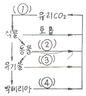
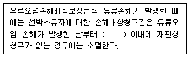

해양환경기사 (2007-05-13 기출문제)
1과목: 해양학개론
1. 망간단괴에 대한 설문 중 옳은 것은?
- 수심 50m 정도의 해저에 가장 많다.
- 직경 25~100cm 정도의 구형이다.
- 수 mm/106년의 비율로 성장한다.
- 대서양에 가장 많다.
(정답률: 75%)

2. 계절풍에 대한 설명으로 적합하지 않은 것은?
- 계절에 따라 바람의 방향이 바뀐다.
- 위도에 따른 태양복사 에너지의 차이 때문에 생긴다.
- 지구표면상의 대륙과 해양의 분포와 밀접하게 관련되어 있다.
- 아시아 대륙의 남쪽 및 남동 해상에서 현저하게 나타난다.
(정답률: 86%)
3. 천해파(shallow sea wave)의 파속(phase speed)과 수심과의 관계를 가장 올바르게 설명한 것은?
- 파속은 수심에 반비례한다.
- 파속은 수심의 제곱근에 비례한다.
- 파속은 수심에 정비례한다.
- 파속은 수심과 무관하다.
(정답률: 87%)
4. 대서양의 Sargasso sea의 표층에 대량으로 존재하며 부표하면서 번식하는 해조류는?
- 모자반류
- 거북말류
- 다시마류
- 켈프류
(정답률: 73%)
5. 역학적 해류계산(dynamic computation)에서 얻어지는 해류는?
- 지형류
- 취송류
- 관성류
- 조류
(정답률: 81%)
6. 해저 열수광상이 잘 형성되지 않는 곳은?
- 해령
- 해산
- 호상열도
- 대륙대
(정답률: 70%)
7. 지형류(geostrophic current)란 다음 중 어느 힘들 사이에서 평형이 되었을 때 나타나는가?
- Coriolis힘과 압력경도력
- Coriolis힘과 바람응력
- Coriolis힘, 압력경도력 및 바람응력
- 압력경도력과 바람응력
(정답률: 85%)
8. 대서양형 대륙주변부의 해저지형으로서 가장 수가 많고, 많이 발달한 것은?
- 대륙붕 수로
- 삼각주 전면계곡
- 해저협곡
- 심해저 수로
(정답률: 72%)
9. 관성원의 반경(r)은? (단, ρ는 위도, C는 접선속도, ω는 지구자전의 각속도이다.)
- r=2Cωcosρ
- r=C/2ωsinρ
- r=2Cωsinρ
- r=C/2ωcosρ
(정답률: 67%)
10. 인근 육지로부터의 영양염 공급 때문에 연안 천해역은 전체적으로 생물의 활동성이 높다. 연안 천해 환경에 미치는 물리적 환경과 거리가 먼 것은?
- 밀도류
- 취송류
- 조류
- 연안류
(정답률: 72%)
11. 지구의 원심력과 대양, 달의 기조력에 관한 설명으로 옳은 것은?
- 지구, 달, 태양이 일직선상일 때 기조력이 가장 크다.
- 지구, 달, 태양이 일직선상일 때 원심력이 가장 크다.
- 지구를 중심으로 달과 태양이 직각일 때 기조력이 가장 크다.
- 달의 기조력은 태양의 기조력보다 작다.
(정답률: 73%)
12. 다음 해저 지형 중 석유 부적 가능성이 가장 희박한 곳은?
- 대륙붕
- 대륙대
- 대양저평원
- 해구
(정답률: 64%)
13. 다음 중 판구조론에서 말하는 판(plate)의 평균두께로 가장 적합한 곳은?
- 10~50km
- 100~150km
- 400~500km
- 800~1000km
(정답률: 83%)
14. Ekman의 취송류 이론에서 상부마찰심도에 주 영향을 주는 것은?
- 풍속
- 풍향
- 수평와동 점성계수
- 연직와동 점성계수
(정답률: 62%)
15. 파랑의 에너지는 파고(H)의 얼마에 비례하는가?
- H-1/2
- H1/2
- H
- H2
(정답률: 83%)
16. 계절수온약층(seasonal thermocline)의 특성 설명으로 옳은 것은?
- 연중 존재한다.
- 하계에 수심 20~30m 이내에 존재한다.
- 수괴 분포에 관련된다.
- 계절에 따라 온도변화가 없다.
(정답률: 64%)
17. 쇄설자원 중 중광물이 주로 퇴적되는 곳은?
- 해빈퇴적층
- 심해 퇴적층
- 대양저 산맥
- 해구
(정답률: 61%)
18. 어느 시간에 어떤 일정한 공간을 점유하는 동일종의 생물체로 구성되는 집단을 가장 잘 나타낸 것은?
- 개체군
- 군집
- 계통군
- 가입군
(정답률: 78%)
19. 심층류의 주 원인은?
- 해수의 밀도차
- 바람
- 조석력
- 심해파
(정답률: 82%)
20. 다음 중 이매패류의 연체조직을 소화시키는 굴양식장의 해적동물 중 가장 큰 피해를 일으키는 것은?
- 불가사리류
- 성게류
- 해삼류
- 거미불가사리류
(정답률: 78%)
2과목: 해양생태학
21. 다음 CO2의 순환도내의 ( )에 들아갈 내용이 번호 순서대로 알맞게 연결된 것은?

- 광합성 - 호흡 - 산화 - 호흡
- 호흡 - 산화 - 광합성 - 호흡
- 광합성 - 산화 - 호흡 - 호흡
- 산화 - 호흡 - 광합성 -호 흡
(정답률: 81%)
22. 해중식물 군락의 발달을 수직적으로 볼 때 가장 깊은 곳에 발달하는 군락은?
- 갈파래류 군락
- 다시마류 군락
- 지충이류 군락
- 잘피 군락
(정답률: 64%)
23. 다음 중 부유물식자가 아닌 것은?
- 따개비류
- 굴
- 해삼류
- 멍게류
(정답률: 68%)
24. 다음 염분과 해양생물의 활동 및 분포에 대한 설명 중 옳은 것은?
- 협염성 생물군은 연안역과 조간대에 많다.
- 대부분의 해양 무척추동물의 체액은 해수와 농도가 비슷한 등장액이다.
- 경골어류 등 저장액의 생물군에서는 과량의 염분이 입을 통해서 배설된다.
- 생물에 대한 저염분의 악영향은 온도가 상승할수록 낮아진다.
(정답률: 74%)
25. 정체수면의 부영양화 진행 과정이 순서대로 바르게 나열된 것은?
- 오염증가기 → 조류번성기 → 호기성분해기 → 혐기성분해기
- 조류번성기 → 오염증가기 → 호기성분해기 → 혐기성분해기
- 조류번성기 → 오염증가기 → 혐기성분해기 → 호기성분해기
- 오염증가기 → 호기성분해기 → 조류번성기 → 혐기성분해기
(정답률: 77%)
26. 다음 중 두색류의 특징은?
- 성체는 피낭으로 싸여 있다.
- 대부분 성체가 되면 고착생활을 한다.
- 성체가 되면 배설기, 척색 및 꼬리가 없어지고, 척색신경관이 퇴화한다.
- 머리에서 꼬리까지 신경색과 척색이 있다.
(정답률: 77%)
27. 다음 중 영구적 중형저서생물(permanent meiofauna)에 해당되지 않는 것은?
- 동갑동물(Loricifera)
- 동문동물(Kinorhyncha)
- 빈모류(Oligochaeta)
- 복모동물(Gastrotricha)
(정답률: 64%)
28. 어패류를 독화하여 마비성 식중독(PSP)을 일으키는 식물플랑크톤이 속하는 속명은?
- Alexandrium 속
- Heterosigma 속
- Dinophysis 속
- Cochlodinium 속
(정답률: 79%)
29. 연안에서 유기오염 지표종으로 사용되는 종들의 특징이 아닌 것은?
- 오염의 진행에 따라 개체수가 증가한다.
- 오염이 극심해지는 최후까지 견딜 수 있다.
- 환경이 회복됨에 따라 점차 서식밀도가 감소한다.
- 생활사가 짧고 생체량이 크다.
(정답률: 80%)
30. 우리나라 하구역에서 흔히 볼 수 있는 종이 아닌 것은?
- 다랑어
- 숭어
- 전어
- 잘피
(정답률: 84%)
31. 외양에 비하여 연안에서 적조현상이 자주 일어나는 이유에 대한 설명으로 틀린 것은?
- 육지로부터 질소와 인이 많이 공급된다.
- 일조량이 풍부하여 광합성작용이 활발하다.
- 미량 원소와 비타민의 용존함량이 높다.
- 유입된 영양염류가 장기간 정체한다.
(정답률: 70%)
32. 갯벌의 오염 정화기능에 대한 설명 중 잘못된 것은?
- 갯벌의 부유물식자는 섬모가 나있는 촉수나 점액질의 호흡기관을 이용하여 수중에 떠다니는 부유물질을 능동적 또는 수동적으로 포획하는 자연 정수기이다.
- 갯벌의 퇴적물 식자는 해저의 표면이나 모래, 펄 속에 있는 유기물을 영양원으로 하는 갯벌의 청소부이다.
- 갯벌의 부유물식자와 퇴적물식자는 입자의 구성성분이나 크기를 비선택적으로 섭취하는 것이 특징이다.
- 갯벌의 부유물식자와 퇴적물식자는 독특한 먹이섭취방법으로 인하여 갯벌상의 유기쇄설물을 제거하는 기능을 수행한다.
(정답률: 72%)
33. 모래나 펄 또는 암초 등 해저기질의 표면에 서식하는 저서동물은?
- 표서동물
- 내서동물
- 오손생물
- 천공동물
(정답률: 58%)
34. 조간대에 서식하는 생물은 노출시 열의 흡수를 줄이고 흡수된 열의 방출을 위해 여러 가지 적응을 한다. 이 적응에 관련된 설명으로 맞는 것은?
- 체적에 대한 체표면적을 줄이기 위해 몸을 작게 한다.
- 암반과 접촉하는 부위의 면적을 크게 한다.
- 패각의 색깔을 밝게 한다.
- 체내의 수분이 증발되지 않도록 한다.
(정답률: 76%)
35. 암반조간대에서 포식에 의해 군집의 대상분포에 영향을 주는 불가사리와 같은 종을 무엇이라고 하는가?
- equilibrium species
- opportunistic species
- key stone species
- dominant species
(정답률: 83%)
36. 해양에 널리 분포하는 소형 요각류는 먹이사슬의 어느 단계에 해당하는가?
- 생산자
- 1차 소비자
- 3차 소비자
- 분해자
(정답률: 76%)
37. 다음 중 다모류의 부유유생 이름은?
- Auricularia
- Bipinnaria
- Trochophore
- Nauplius
(정답률: 57%)
38. 다음 중 간극동물(Interstitial fauna)의 군집발달에 영향을 미치는 가장 큰 환경요인은?
- 해류
- 저질의 입도조성
- 수온
- 먹이관계
(정답률: 77%)
39. 불안정한 서식환경에서의 해양생물 군집의 특징이 아닌 것은?
- 우점도가 낮다.
- 생물다양성이 낮다.
- 종수가 적다.
- 천이가 빠르게 일어난다.
(정답률: 64%)
40. 다음의 생물 중 극피동물에 속하지 않은 것은?
- 해삼
- 보라성게
- 전복
- 불가사리
(정답률: 76%)
3과목: 해양계측학
41. 다음 중 시추된 시료의 양과 관계가 가장 먼 것은?
- 퇴적물의 종류
- 시추기의 무게
- 시추기의 길이
- 해수의 밀도
(정답률: 82%)
42. 저질조사를 위해 시료를 채취한 후 행하는 기본적인 측정항묵이 아닌 것은?
- 함수비
- 사면안정경사
- 공극율
- 탄성비
(정답률: 63%)
43. 해수의 탄산염 평형 시스템에 관한 설명 중 옳은 것은?
- 해수에 있어서 HCO3-의 농도가 CO2나 CO32-보다 높다.
- 해수의 pH와는 무관한다.
- 해수와 담수를 비교할 때 H2CO3의 pK1과 pK2는 해수의 것이 담수의 것보다 높다.
- 해수의 온도와 압력은 전혀 영양을 미치지 않는다.
(정답률: 63%)
44. 해안선 측량시 보조점의 측정법이 아닌 것은?
- 전방교회법
- 직선일각법
- 후방교회법
- 분할법
(정답률: 70%)
45. 해수의 밀도는 수온, 염분 및 수압에 의해 결정되는데, 일반적으로 수온과 염분의 증가에 따른 밀도의 변화는?
- 수온증가 → 밀도증가, 염분증가 → 밀도증가
- 수온증가 → 밀도감소, 염분증가 → 밀도증가
- 수온증가 → 밀도감소, 염분증가 → 밀도감소
- 수온증가 → 밀도증가, 염분증가 → 밀도감소
(정답률: 77%)
46. 다음 중 파장이 가장 긴 전자파는?
- 마이크로파
- 자외선
- 라디오파
- 적외선
(정답률: 60%)
47. ADCP 유속계는 다음의 어느 원리를 이용하여 해류를 측정하는가?
- 프로펠러 회전수
- 페러디 법칙
- 도플러 효과
- 해수의 전도성 변화
(정답률: 80%)
48. T-S diagram의 해양학적 이용에 대한 설명 중 틀린 것은?
- 자료 오차검사(error check)방법으로 활용 가능하다.
- T-S곡선이 별로 분산되어 있지 않으면 온도값으로 염분값을 알 수 있다.
- 해수의 기원(origin)을 알 수 있다.
- 해수의 혼합(mixing)정도는 추정 불가능하다.
(정답률: 62%)
49. 베링해 규조류의 해수의 고대온도 탐지에 잘 이용되는 동위체의 비는?
- 18O/14O
- 18O/15O
- 18O/16O
- 18O/17O
(정답률: 76%)
50. 피스톤 시추기에서 채취된 퇴적물이 빠지지 않게 하는 부분은?
- Nose cone
- Core catcher
- Piston immobilizer
- Trigger arm
(정답률: 78%)
51. 취송류에 대한 에크만 나선(Ekman spiral)에서 표층의 해류방향은 남반구에서 어느 쪽인가?
- 바람방향의 오른쪽으로 45° 방향
- 바람방향의 왼쪽으로 30° 방향
- 바람방향의 오른쪽으로 60° 방향
- 바람방향의 왼쪽으로 45° 방향
(정답률: 70%)
52. 전도온도계에 있어서 부온도계로 주로 측정하는 것은?
- 해수 중의 최고 수온
- 해수 중의 최저 수온
- 전도되는 순간에 수압의 영향이 배제된 수온
- 전도 온도계를 읽을 때 유리관 내의 주위 온도
(정답률: 68%)
53. Sedwick-rafter slide는 주로 어떤 해양생물의 정량분석 시 사용되는가?
- 식물플랑크톤
- 동물플랑크톤
- 저서생물
- 유영동물
(정답률: 74%)
54. 원격탐사에 이용되는 인공위성에 관측 장비 이외에 기본적으로 탑재되어야 할 장치와 가장 거리가 먼 것은?
- 음향 송ㆍ수신장치
- 야간에도 작동 할 수 있게 하는 전력공급장치
- 가열을 방지하는 열제어장치
- 위성의 자세제어장치
(정답률: 85%)
55. 위성 자료 처리의 기하학적 보정 과정 중 제일 먼저 해야 하는 것은?
- 각 Pixel의 회전 이동
- 각 Pixel의 평행 이동
- 자료의 Reformatting
- Pixel의 크기 조정
(정답률: 66%)
56. 수심 200m인 곳에서 파장 100m인 파의 주기는?
- 약 2.2초
- 약 4.0초
- 약 5.6초
- 약 8.0초
(정답률: 69%)
57. 세계기상기구(WMO)에서 지정한 파랑관측코드는 몇 등급인가?
- 5
- 10
- 15
- 20
(정답률: 74%)
58. 해양 석유탐사시 가장 효과적인 탐사방법은?
- 중력탐사법
- 자력탐사법
- 지진파탐사법
- 열류량측정법
(정답률: 74%)
59. 파가 깨질 때 일어나는 현상 중 틀린 것은?
- 파장이 짧아진다.
- 파고가 커진다.
- 주기가 짧아진다.
- 연안류가 생긴다.
(정답률: 65%)
60. 심해저 망간단괴를 채취할 때 가장 적합한 기기는?
- 드렛지
- 그랩
- 피스톤 시추기
- 회전식 시추기
(정답률: 78%)
4과목: 해수의 수질분석
61. 해수 pH 측정을 위한 시료의 채수 후 측정시기로 가장 적절한 것은?
- 1일 이내
- 1시간 이내
- 한 달 이내
- 일주일 이내
(정답률: 74%)
62. 해저퇴적물 중 중금속 성분을 분석하는데 있어 가장 많이 사용되는 기기는 원자흡수분광광도계이다. 이 기기를 사용할 때 각 물질과 중공음극관의 파장이 틀린 것은?
- 구리: 324.7nm
- 망간: 279.5nm
- 아연: 213.9nm
- 알루미늄: 248.3nm
(정답률: 79%)
63. Winkler 법에 의한 용존산소 측정용 0.025N 티오황산나트륨 표준용액 1리터를 만들기 위해서는 Na2S2O3ㆍ5H2O(분자량 248) 몇 g을 용해시켜야 하는가?
- 0.025g
- 2.48g
- 3.1g
- 6.2g
(정답률: 54%)
64. 해수 중의 황화수소를 측정하는 방법 설명으로 틀린 것은?
- 시료를 산성용액에서 염산디메틸페닐렌디아민과 염화제이철의 혼합용액과 반응시킨다.
- 메틸렌블루의 푸른색으로 발색시켜 670nm에서 가시광선 분광광도계로 흡광도를 측정한다.
- 유효 측정범위는 검출한계 ~3.0ugS/L까지이다.
- 초산아연용액으로 시료를 현장에서 고정시킨다.
(정답률: 46%)
65. 다음 측정 항목 중 시료용기로써 유리병을 사용할 수 없는 것은?
- 유기인
- 페놀
- 규산규소
- COD
(정답률: 72%)
66. 카드뮴 환원법에 의한 질산성질소 측정법에 관한 설명 중 틀린 것은?
- 질산성질소는 카드뮴환원관을 이용하여 아질산이온으로 환원시킨다.
- 아질산이온의 농도를 측정하여 질산성질소 농도를 구한다.
- 본래 시료 중에 포함되어 있던 아질산성질소 농도는 미리 측정하여 빼준다.
- 카드뮴환원관을 통과한 질산성질소는 220nm 자외선에서 흡광도를 측정한다.
(정답률: 70%)
67. 다음 용기의 설명 중 틀린 것은?
- “용기”라 함은 시약 또는 시료를 넣어 두는 것을 말하며 시약 또는 시료와 직접 접촉하는 것을 뜻한다.
- 용기를 막는데 사용되는 마개는 용기의 일부로 간주하지 않으며 특별한 설명이 없는 한 동일한 재질을 뜻한다.
- “밀봉용기”란 취급 또는 저장하는 동안에 기체 또는 미생물이 침입하지 않도록 내용물을 보호하는 용기를 말한다.
- “차광용기”란 취급 또는 저장하는 동안에 용기 내의 내용물이 투과광선에 의해 광화학적 변화를 일으키지 않도록 빛의 투과를 방지할 수 있는 암갈색 용기 또는 포장된 용기를 말한다.
(정답률: 77%)
68. 다음 중 HPLC를 이용한 광합성 색소 측정법으로 알 수 없는 것은?
- 식물플랑크톤의 종명
- 식물플랑크톤의 종조성
- 광합성 보조 색소의 양
- chlorophyll 분해산물의 양
(정답률: 75%)
69. 대장균군 실험에 대한 다음 설명 중 틀린 것은?
- 모든 조작은 원칙적으로 무균조작을 하여야 한다.
- 실험실 내의 청결을 유지하여야 한다.
- 대장균군은 그람양성, 아포성의 간균이다.
- 대장균군은 유당을 분해아여 가스 또는 산을 발생하는 모든 호기성 또는 통기혐기성균을 말한다.
(정답률: 58%)
70. 해수 중 중금속과 이를 측정하기 위한 방법 중 틀린 것은?
- 납: ICP-MS법
- 수은: 냉증기-원자흡광광도법
- 알킬 수은: 원자흡광광도법
- 비소: 냉증기-원자흡광광도법
(정답률: 56%)
71. 퇴적물의 입도분석 시 습식분석 없이 건식분석으로 충분한 경우는?
- 퇴적물이 뻘질인 경우
- 퇴적물이 사질인 경우
- 퇴적물이 뻘질과 사질로 혼합되어 있는 경우
- 퇴적물이 고화된 상태로 있는 경우
(정답률: 85%)
72. 해양환경공정시험방법에서 해수 시료를 염화메틸렌으로 추출하여 분석하는 것은?
- 유기인
- 페놀류
- 카드뮴
- 구리
(정답률: 63%)
73. 해수 중 구리, 납 등 미량금속을 분석하기 위한 시수를 보관할 때 질산을 넣어 pH2 이하로 보관하는 이유와 가장 거리가 먼 것은?
- 미생물에 의해 분해되는 것을 방지하기 위해
- 용기벽에 흡착되는 것을 방지하기 위해
- 응집침전되는 것을 방지하기 위해
- 부유물질에 흡착되는 것을 방지하기 위해
(정답률: 59%)
74. 해저퇴적물의 강열감량이 의미하는 것은?
- 퇴적물 중 총유기물량
- 퇴적물 중 유기물질이 산소를 소모하는 양
- 퇴적물 중 총유기탄소량
- 퇴적물 중 난분해성 유기물질의 양
(정답률: 44%)
75. 해저퇴적물 중의 총 황에 대한 설명을 틀린 것은?
- 퇴적물 중 황은 공극수 중의 황산염, 황화수소, 황화물, 황산염 광물, 유기황화물의 형태로 존재한다.
- 퇴적물의 유기물 오염이 심해지면 퇴적물 중 황화물의 양이 줄어든다.
- 황화물량을 선택적으로 측정하기 어렵다.
- 중량법으로 측정할 수 있다.
(정답률: 67%)
76. 해수 중 유기주석화합물(TBT) 분석에 대한 설명으로 틀린 것은?
- 기체크로마토그래프로 분리하여 전자포획검출기(EDC)로 분석한다.
- 기체크로마토그래프 및 검출기를 이용한 기기검출한계는 95% 신뢰구간에서 10ng/L 미만이다.
- 현장에서 시료를 채취하여 1L 유기용기에 넣은 후 분석시까지 냉장보관한다.
- 유기주석화합물은 분해 및 생분해될 우려가 있으므로 차광용기를 사용하여 빠른 시간 안에 분석한다.
(정답률: 52%)
77. Microtox bioassay 기법 중 유기용매추출법에 의한 독성평가 방법의 특징이 아닌 것은?
- 공극수가 제거된 퇴적물을 대상으로 한다.
- 추출용매는 주로 염화메틸렌을 사용한다.
- 주로 중성 또는 비이온성 유기물질의 독성을 검색한다.
- 전처리 과정이 단순하다.
(정답률: 66%)
78. 해수의 인산염-인 정량에 관한 다음의설명 중 틀린 것은?
- 몰리브덴산과 반응하여 착화합물을 형성한 후 안티모니가 첨가된 아스코르빈산 용액에 의해 환원되어 푸른색으로 발색된다.
- 분광광도계 또는 자동분석기를 이용하여 885nm에서 흡광도를 측정한다.
- 몰리브덴산과의 착화합물 형성에 의한 발색은 중성에서 아여야 한다.
- 일단 발색된 시료는 수시간 동안 안정하나 그 이후 점차 규산염-규소의 간섭에 의해 발색정도가 증가될 수 있으므로 가능한 한 1시간 이내에 흡광도를 측정한다.
(정답률: 52%)
79. 해수시료 중의 인산 인 시험 방법에 관한 내용으로 잘못된 것은?
- 산성의 몰리브덴산과 반응하여 인산 몰리브덴산 착화합물을 형성한 후 아스코르빈산에 의해 환원된 것을 측정한다.
- 유효측정범위는 검출한계 ~ 0.500 mgP/L이다.
- 혼합용액 첨가 반응 후 10분에서 1시간 사이에 분광광도계의 셀에 넣고 885nm의 파장에서 흡광도를 측정한다.
- 발색시키는 혼합용액(4종의 시약이 포함)에는 술퍼닐아미드 용액도 포함된다.
(정답률: 44%)
80. 최적확수시험법에 의한 대장균군 시험법의 설명 중 틀린 것은?
- 측정단위는 MPN/100ml로 나타낸다.
- 희석수는 멸균된 증류수를 사용한다.
- 그람염색 시약으로는 수산암모늄-크리스탈 바이올렛, 루골용액, 카운터스테인, 아세톤, 알코올 등을 사용한다.
- 시료의 채취는 무균적으로 하고, 멸균된 용기에 넣어 하루 내에 측정하면 된다.
(정답률: 76%)
5과목: 해양관련법규
81. 해양오염방지법상 선박에 설치되는 해양오염방지설비에 대하여 수검하는 검사의 종류에 해당되지 않는 것은?
- 정기검사
- 중간검사
- 제조검사
- 임시검사
(정답률: 59%)
82. 73/78 MARPOL 협약 부속서 V(선박으로부터의 폐기물에 의한 오염방지를 위한 규칙)의 설명으로 틀린 것은?
- “폐기물”이라 함은 생선 및 그의 부분을 제외하고 선박의 통상의 운항중에 발생하고 계속적, 주기적으로 처분되는 식생활상, 선내생활상 및 운항상 생기는 모든 종류의 폐물을 말한다.
- 이 부속서상 특별해역은 지중해, 발틱해, 흑해, 홍해, 걸프, 북해, 남극 및 카리브해역을 말한다.
- 부유성의 던니지(dunnage), 라이닝 및 포장물질은 육지로부터 50해리 이상 떨어진 곳에 버려야 한다.
- 폐기물이 각각 다른 처분요건이나 배출요건의 적용을 받는 다른 배출물과 혼합되어 있는 때에는 엄격한쪽의 요건을 적용한다.
(정답률: 76%)
83. 습지보전법상 습지보호지역에서 허용되는 행위는?
- 토지의 형질 변경
- 건축물의 신축
- 재해응급대책상 흙ㆍ모래 채취
- 광물의 채굴
(정답률: 80%)
84. 해양오염방지법상 국제항행을 하는 대한민국의 선박소유자 또는 선장이 협약당사국으로부터 협약증서를 교부받고자 하는 경우 누구를 통해 신청하여야 하는가?
- 당해국 주재 대한민국 영사
- 당해국 주재 대한민국 대사
- 대한민국 주재 당해국 영사
- 대한민국 주재 당해국 대사
(정답률: 54%)
85. 유류오염손해배상보장법상 “계산단위”의 의미는?
- 미국 달러화에 대한 원화의 환율
- 국제통화기금의 특별인출권
- 원화와 일본엔화의 교환비율
- 증권사에 상장한 주식의 주가지수
(정답률: 83%)
86. 해양오염방지법상 기름오염방지 설비를 설치한 선박으로서 유조선의 화물창과 해양수산부령이 정하는 선박의 연료유탱크에 물 밸러스트를 적재할 수 있는 경우는?
- 통상항로에서 흘수를 깊게 하기 위한 경우
- 충돌을 방지하기 위한 경우
- 선박의 안전을 확보하기 위한 경우
- 화물창을 청소하기 위한 경우
(정답률: 74%)
87. 해양오염 방제대책위원회의 기능이 아닌 것은?
- 해양오염방제조치에 관한 제도개선 대책 등에 관한 사항
- 해양오염사고시 동원된 인력ㆍ장비의 지휘ㆍ통제
- 해양오염사고시 방제도치에 필요한 인력ㆍ예산 등 지원을 위한 중앙기관간의 업무조정
- 해양오염사고에 대비한 긴급방제대책 수립에 관한 사항
(정답률: 57%)
88. 73/78 MARPOL에서 규정하고 있는 국제기름오염방지증서의 유효기간은?
- 2년
- 3년
- 4년
- 5년
(정답률: 79%)
89. 유류오염손해배상보장법상 선박소유자는 채권자로부터 책임한도액을 초과하는 청구금액을 명시한 서면청구일로부터 몇 월 이내에 책임제한절차 개시 신청을 해야 하는가?
- 1월
- 2월
- 3월
- 6월
(정답률: 56%)
90. 유류오염손해배상보장법상 책임제한사건의 관할 주체는?
- 선백소유자의 주소지를 관할하는 지방법원
- 유류오염사고 발생지를 관할하는 지방법원
- 채권자의 보통재판적 소재지 관할법원
- 해양수산부장관이 별도 지정한 법원
(정답률: 71%)
91. 문제와 보기 오류로 현재 복원중입니다. 보기 내용을 아시는 분들께서는 오류 신고를 통하여 보기 작성 부탁 드립니다. 정답은 2번입니다.)
- 복원중
- 복원중
- 복원중
- 복원중
(정답률: 73%)
92. 연안관리법상 해양수산부 장관은 효율적인 연안정비사업을 위하여 몇 년 단위로 연안정비계획을 수립해야 하는가?
- 1년
- 3년
- 5년
- 10년
(정답률: 62%)
93. 해양오염방지법상 선박의 항행 중에 선박 안에서 소각해서 안되는 물질 중 해양수산부장관의 형식승인을 얻은 국제해사기구형 선내 소각기에서 소각이 허용되는 것은?
- 폴리염화비페닐(PCBs)
- 육상으로부터 이송된 폐기물
- 폴리염화비닐(PVCs)
- 해양수산부장관이 고시하는 기준량 이상의 중금속이 포함된 쓰레기
(정답률: 55%)
94. 유류오염손해배상보장법상 국제기금 및 책임제한절차에 대한 설명으로 틀린 것은?
- 선박소유자 등으로부터 배상받지 못한 유류오염손배금액은 국제기금협약에 따라 보상을 청구할 수 있다.
- 국제기금협약에 의한 권할권이 있는 경우에는 외국법원이 한 확정판결도 준용한다.
- 법원은 현저한 손해를 피하기 위하여 필요하다고 인정하는 때에는 직권으로 책임제한사건을 다른 관할법원에 이송할 수 있다.
- 유류수령인은 연간 수령한 분담유의 합계량이 20만톤을 초과한 경우에 그 다음 연도에 그 수령량을 보고하여야 한다.
(정답률: 59%)
95. 수질환경보전법규상 공공수역에 해당되지 않는 것은?
- 하천
- 항만
- 연안해역
- 상수관거
(정답률: 68%)
96. 다음 중 73/78 MARPOL과 관련된 국내법규는?
- 해양오염방지법
- 선박안전법
- 개항질서법
- 국제선박등록법
(정답률: 80%)
97. 유류오염손해배생보장법의 목적에 포함되지 않는 것은?
- 선박소유자의 책임 명확화
- 유류손해의 배상제도 확립
- 유류운송의 건전한 발전도모
- 해양환경의 적절한 보존과 관리
(정답률: 57%)
98. 해양오염방지법상 해양오염방지설비 등을 교체ㆍ개조 또는 수리를 한 때 행하는 검사는?
- 임시항행검사
- 중간검사
- 정기검사
- 임시검사
(정답률: 75%)
99. 해양오염방지법령상 선박 또는 해양시설에서의 기름 등 폐기물의 배출 감시 및 해양오염 방지설비의 적정 운용에 관한 출입검사 보고 등을 할 수 있는 자는?
- 해양시설관리자
- 오염방지관리인
- 방제ㆍ청소업자
- 해양환경감시원
(정답률: 68%)
100. 다음 ( )안에 알맞은 것은?

- 1년
- 2년
- 3년
- 4년
(정답률: 73%)